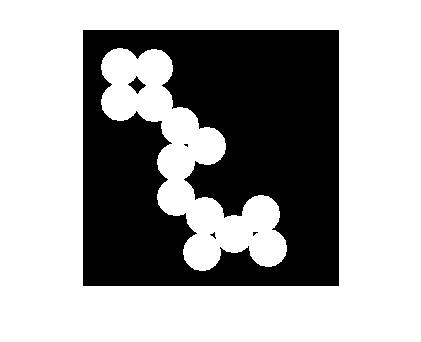
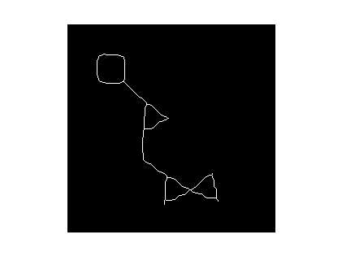
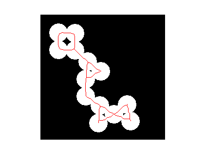
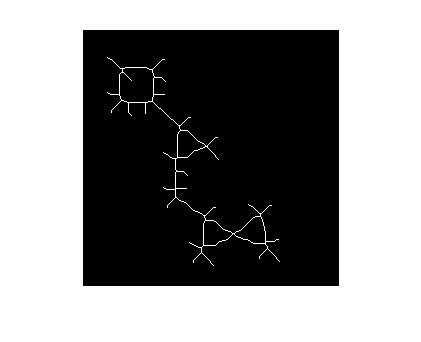

Contents
function demoSkeleton(varargin)
%DEMOSKELETON Demo on how to use skeleton function on Image object % % % Example % demoSkeleton % % % ------ % Author: David Legland % e-mail: david.legland@grignon.inra.fr % Created: 2011-11-11, using Matlab 7.9.0.529 (R2009b) % Copyright 2011 INRA - Cepia Software Platform.
Input image
% read input image bin = Image.read('circles.png'); % display show(bin);
Skeleton with 'thin'
% compute skeleton (same as "skeleton(bin, 'method', 'thin');") skel = skeleton(bin); figure; show(skel); % compute and display overlay ovr = overlay(bin, skel); figure; show(ovr); 
Skeleton with 'skel'
% compute skeleton skel2 = skeleton(bin, 'method', 'skel'); figure; show(skel2); % compute and display overlay ovr2 = overlay(bin, skel2); figure; show(ovr2);